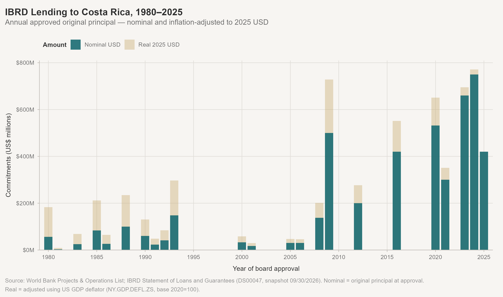
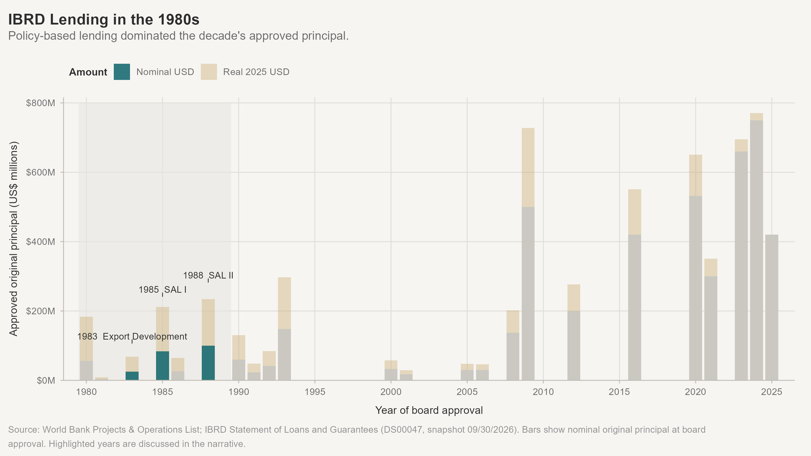
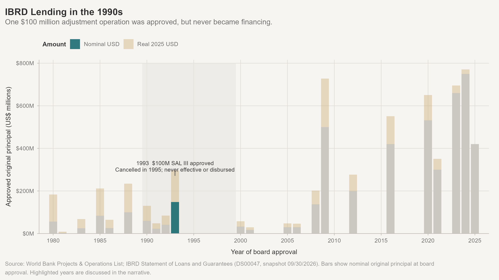
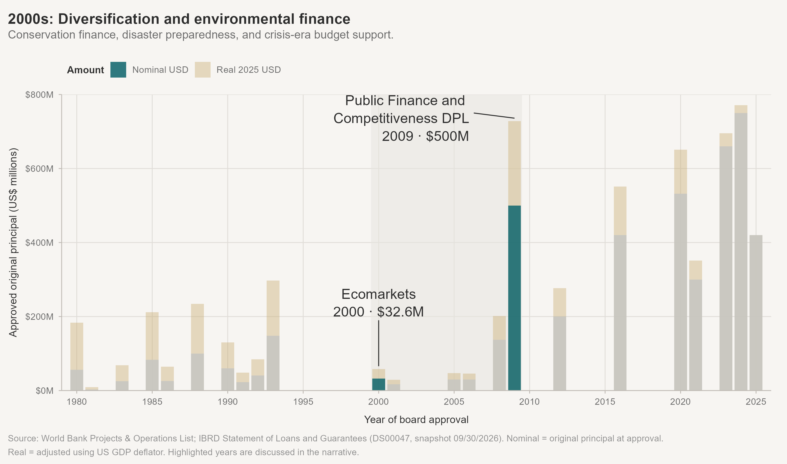
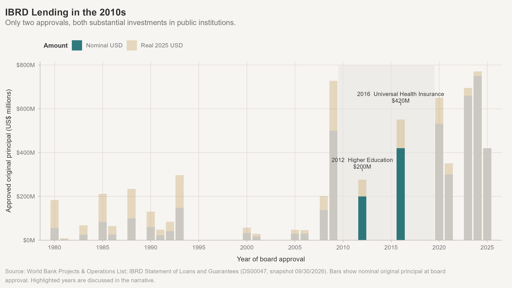
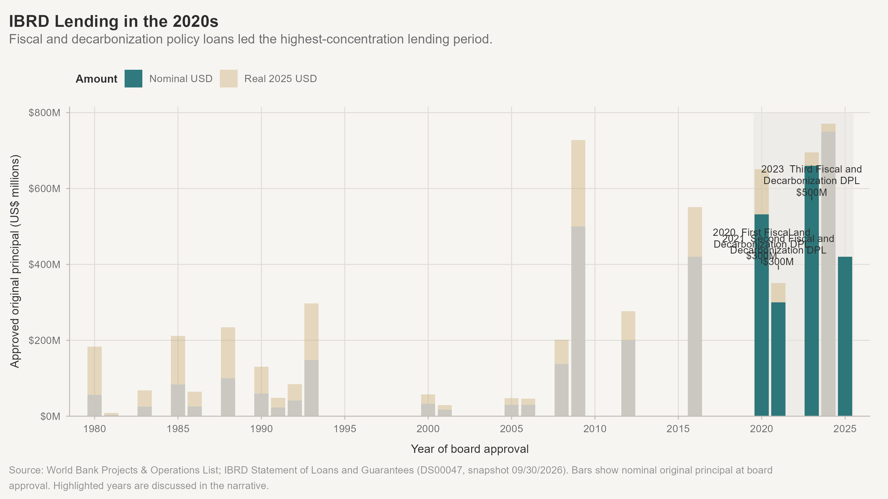
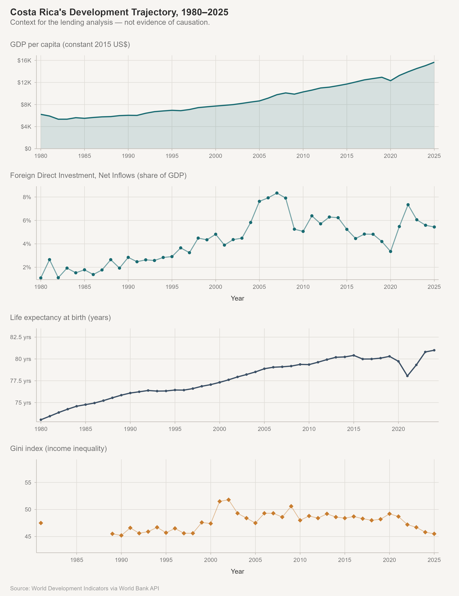
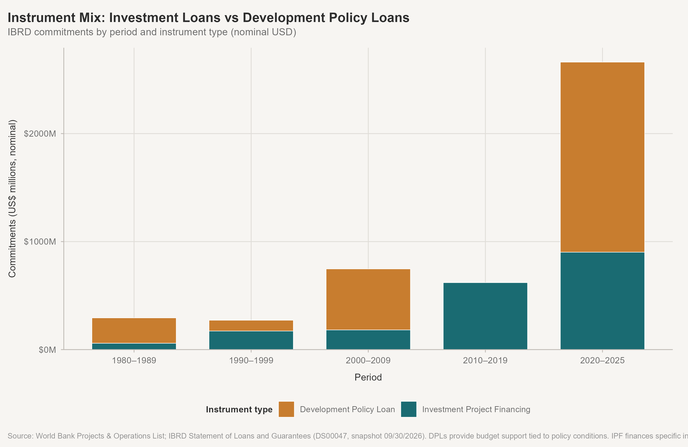

The World Bank Group in Costa Rica
A 45-year story of development finance, shifting priorities, and a changing relationship
A small country with an unusual story
Costa Rica is a small country with a developmental track record that has never quite matched the standard template. It abolished its army in 1948 and spent the following decades building public education, health care, and social insurance institutions that became distinctive features of its model.
Those institutions were already substantial when this story begins in 1980. Costa Rica was not starting from scratch, and it was not simply waiting for an international lender to supply a development blueprint. Life expectancy was already rising; the state remained a major provider of essential services; and a domestic political tradition gave reform arguments a public, institutional setting rather than leaving them to a handful of technocrats.
Over the next 45 years, Costa Rica would face a debt crisis, liberalize and diversify its economy, build a world reputation for conservation, absorb major shocks, and eventually enter the World Bank’s high-income classification. The World Bank was present through much of that transformation, but its role changed with the country.
The central question is not only how much financing Costa Rica received. It is how the relationship between two changing development models evolved:
How did the World Bank Group’s financing relationship with Costa Rica change from 1980 to 2025 — in scale, instruments, and priorities — and what do those changes reveal about the practice of international development finance?
This is a descriptive story, not a study of causation. It follows the lending record and the institutional context around it, while leaving open a harder question: how much of the country’s trajectory reflected domestic choices, external pressures, private investment, and policy decisions for which no lending portfolio can take sole credit.
Three institutions, three kinds of engagement
The phrase “the World Bank” usually means several different institutions within the World Bank Group.
The International Bank for Reconstruction and Development (IBRD) lends to creditworthy middle- and higher-income governments. Costa Rica’s 1980–2025 IBRD record is the core of this project: an approved-lending portfolio, not a record of every dollar actually delivered.
The International Finance Corporation (IFC) invests directly in private companies and financial institutions. Its own-account investments are different from IBRD sovereign loan principal.
The Multilateral Investment Guarantee Agency (MIGA) provides political-risk guarantees to private investors. Its gross exposure is a potential liability, not a loan, a disbursement, or the value of an underlying project.
The figures for these institutions therefore cannot be added together. IBRD, IFC, and MIGA participated in Costa Rica’s development through different legal and financial instruments.
Forty-five years of IBRD lending
From 1980 through 2025, the IBRD record contains 35 projects with $4.6B in nominal original principal. In 2025 purchasing power, using the US GDP deflator, the same approved principal is roughly $6.2B.
Approved principal is the amount recorded when the IBRD Board approved an operation. It is not the same as funds signed, disbursed, or spent. That distinction becomes especially important in the story of SAL III, when a large approved operation never became an effective loan.
The timeline is the spine of this story. The country and the institution both changed around it.
The 1980s: debt crisis and structural adjustment

Costa Rica entered the decade under severe pressure. A deteriorating terms of trade, rising international interest rates, domestic fiscal imbalances, commodity shocks, and regional instability culminated in a balance-of-payments and debt crisis. In August 1981, the government suspended debt-service payments to commercial creditors. Output fell sharply, unemployment rose, and inflation reached roughly 90 percent in 1982.
The response involved stabilization and structural reform. Costa Rica worked with the IMF, the World Bank, and bilateral donors to reduce inflation, liberalize trade, promote exports, and adjust the role of the state in the economy. The question was not simply how to restore foreign-exchange earnings. It was whether the country could change the way its economy worked without dismantling the public institutions that had been central to its model.
The World Bank’s contribution took several forms. The 1983 Export Development Loan supported export-sector and trade reforms. Structural Adjustment Loans I and II followed in 1985 and 1988. The same portfolio still contained identifiable investments: roads, water supply, petroleum support, and institutional assistance.
In the decade as a whole, eight IBRD projects approved roughly $294 million in nominal original principal. The three policy-based operations — the 1983 loan, SAL I, and SAL II — accounted for approximately 70 percent of that amount.
This period was an early negotiation over priorities rather than a clean transfer of a single economic model. Liberalization moved ahead, but Costa Rica’s public universities, health system, and social insurance institutions continued to operate. The result was neither the inward-looking economy that preceded the crisis nor a laissez-faire state. It was a more open hybrid, with market-oriented reforms sitting beside a persistent public role in social provision.
The 1990s: a loan that never happened

The 1993 Third Structural Adjustment Loan makes a concrete point about the limits of institutional plans. The IBRD approved $100 million, but Costa Rica’s incoming administration after the 1994 election did not meet the conditions needed for effectiveness. The loan was cancelled in March 1995 and disbursed no money.
That is a very different episode from a loan that was signed and later repaid. SAL III belongs in the history of Board-approved operations, but it never became delivered IBRD financing.
The failed effectiveness of SAL III also illustrates why “World Bank policy” and “Costa Rican policy” should not be treated as interchangeable. The Bank could propose terms and approve financing, but the next government had to act within domestic political processes to make the loan operational.
The 1990s and 2000s: diversification and environmental finance

Costa Rica’s economy was changing in a way no lending chart could capture by itself. Intel announced a major Costa Rican investment in 1996, and the country subsequently developed important export positions in medical devices and business services. Tourism grew as another source of foreign exchange and employment. The economic identity of the country was moving beyond its long reliance on traditional agriculture and becoming more integrated with global production and services.
Environmental policy followed a related but distinct domestic trajectory. Costa Rica established its national Payments for Environmental Services program, known as PSA, in 1997. The program compensated private landowners for maintaining forests and ecosystem services that markets otherwise undervalued.
In 2000, the World Bank approved the $32.6 million Ecomarkets project. It did not introduce forest conservation to Costa Rica. Instead, it supported an existing national initiative and helped strengthen the institutions and financing arrangements around it. This is a useful example of a shared priority: Costa Rica had developed the approach, and the Bank helped provide resources and institutional support.
Policy-based lending then returned. In 2008, the Bank approved the $65 million catastrophe deferred drawdown option, a contingent credit line for disasters. In 2009, a $500 million Development Policy Loan addressed public finance and competitiveness during the global financial crisis.
Policy-based finance never followed a simple forward-and-backward schedule. It returned under new circumstances, with a different immediate purpose.
MIGA and a private toll-road project
In FY2008, MIGA recorded gross guarantee exposure of $158.5 million for the Autopistas del Sol toll-road concession. MIGA’s guarantee protected private investors against specified political risks; it did not lend $158.5 million to Costa Rica or represent the concession’s total value.
The 2010s: public institutions and private development

The 2010s provide a reminder that a sparse decade in project count need not be a small decade in financing. IBRD approved just two projects, with combined original principal of $620 million.
The 2012 Higher Education Improvement Project provided $200 million to strengthen Costa Rica’s public university system. The 2016 operation, Strengthening Universal Health Insurance, provided $420 million to the Caja Costarricense del Seguro Social, the institution that administers public health insurance.
At $420 million, the health operation was the largest Investment Project Financing operation in the 1980–2025 IBRD portfolio. The small number of projects conceals the scale of support directed to major public institutions.
IFC engaged through a different channel. Rather than financing government programs, it invested in private companies. The Reventazón hydropower project was a prominent 2012 example: a $100 million IFC own-account investment in a major private-sector energy asset. That amount is not IBRD principal and should not be combined with it.
The 2020s: fiscal reform, climate, and pandemic

The 2020–2025 period is the portfolio’s high-concentration period. It includes 12 projects and $2.66 billion in nominal original principal — 57.9 percent of all 1980–2025 approved principal.
Several domestic developments explain why fiscal management became central. Costa Rica faced a 2017 fiscal and liquidity crisis, then adopted contested tax reform in 2018. In 2019, the country launched the National Decarbonization Plan, setting an ambition to reach net-zero emissions by 2050. The COVID-19 pandemic then disrupted economic activity and public finances in 2020.
The IBRD’s response included a series of Fiscal and Decarbonization Management Development Policy Loans:
- $300 million in 2020
- $300 million in 2021
- $500 million in 2023
A second disaster-risk DPL with a contingent drawdown option was approved in 2023 at $160 million. The 2025 portfolio continued the mix with fiscal and green-growth policy support, a sustainable agriculture investment, education, territorial development, and social risk management.
These DPLs provided budget support tied to policy commitments. They were not direct financing for green infrastructure. The 2020–2023 sequence matters: Costa Rica articulated its decarbonization ambition in 2019, before the Bank’s climate-linked DPL series began.
The interpretation is therefore not that the Bank introduced climate policy to Costa Rica. It was incorporating a national ambition into a broader financing relationship centered on fiscal sustainability, public policy, and recovery from a pandemic.
The portfolio remained mixed even at the height of policy lending. Education, agriculture, disaster resilience, territorial development, fisheries, tax administration, and social protection all continued to receive investment financing.
Costa Rica’s development trajectory

The lending timeline unfolded alongside substantial social and economic change. In real 2015 US dollars, GDP per capita rose from approximately $6,200 in 1980 to $15,100 in 2024. Life expectancy increased from approximately 73 years to 81 years.
Inequality complicates the success story. The Gini index peaked at roughly 51.8 in 2002 in this series, then declined to 45.8 in 2024. A 2025 World Bank API estimate is around 45.5, but it is preliminary rather than a confirmed survey observation.
These patterns are context, not evidence that World Bank lending caused income growth, health gains, or inequality trends. Costa Rica’s trajectory reflected public institutions, demographic change, trade, foreign investment, social policy, and the country’s own political decisions. The lending record can show an evolving partnership, but it cannot isolate one institution’s contribution to the national outcome.
IBRD lending by instrument: the visual recap

The instrument mix closes the chronology. Development Policy Loans provide budget support in return for policy commitments. Investment Project Financing supports identifiable programs and capital projects. The historical category includes earlier structural adjustment and policy-based operations that served a similar function before the modern instrument labels became standardized.
The instruments did not replace one another in a straight line. Policy-based lending was dominant in the 1980s, nearly absent in the 2010s, and prominent again in the 2020s. Investment Project Financing accompanied adjustment, continued through the diversification period, and financed major public institutions in the 2010s.
Conclusion: a changing relationship
Costa Rica’s development story is not reducible to the institutions that financed it. Its social model predated this study. Its economic identity changed through domestic decisions and global forces. Its forest and climate ambitions emerged through public policy that other institutions could support but did not originate.
The World Bank changed too. It moved from adjustment-era policy lending toward social investment, environmental finance, public-sector support, and climate-linked fiscal operations. Those changes were real, but they did not create a simple sequence in which the Bank replaced one philosophy with the next. Different instruments coexisted and returned under different circumstances.
Approval also remained distinct from delivery. The 1993 SAL III approval was cancelled. The vaccine operation in 2022 was terminated before the loan agreement. The 2009 DPL was different again: a large operation approved for public finance and competitiveness in the midst of a global crisis.
The relationship was never simply a lender directing a borrower. It was an evolving negotiation among Costa Rica’s development choices, the priorities of a domestic political system, and an international institution’s changing ideas about development finance.
In 1980, Costa Rica was responding to a debt crisis. By 2025, it had become a high-income economy. Its next set of development questions is not whether it can reproduce the social model of the earlier era under a new income classification, but how it can sustain and broaden that model amid fiscal pressure, inequality, climate risk, and a changing private economy.
For the World Bank, the question is equally important: what does development finance look like when the borrower is no longer conventionally poor?
Read the Analysis for the supporting evidence, the Data Dictionary for source definitions, and Methodology for the research design and limitations.